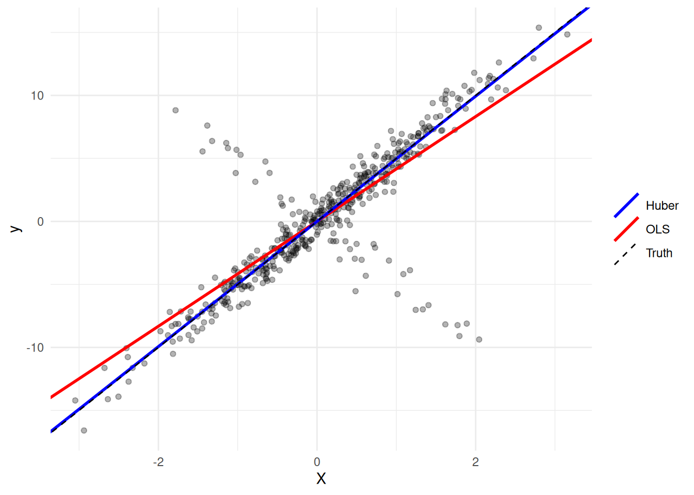
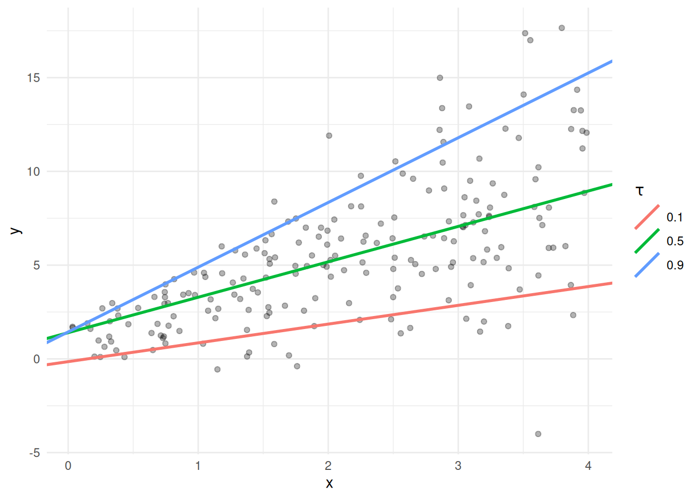

set.seed(1289)
m <- 450; M <- 1; pflip <- 0.10
beta_true <- 5
X <- matrix(rnorm(m), ncol = 1)
y_true <- X * beta_true
flip <- 2 * rbinom(m, 1, 1 - pflip) - 1 # -1 flips the sign
y <- flip * y_true + rnorm(m)6 Changing the Loss: Huber, Quantile, LAD
NoteWhat you’ll be able to do
Swap a squared-error loss for a Huber (robust) or quantile (asymmetric) loss by editing a single line, and understand how each changes the estimator.
6.1 The loss is a knob
Every regression in this book has the shape
\[\underset{\beta}{\mbox{minimize}}\quad \sum_i \phi\big(y_i - x_i^\top\beta\big),\]
and the choice of the loss \(\phi\) is the choice of estimator. Squared loss gives least squares. In Chapter 2 we already swapped it for absolute value (\(\phi(u)=|u|\)) to get least-absolute-deviation regression — one edited line. This chapter takes that idea seriously: two more losses, two more estimators, same code.
6.2 Huber: robust to outliers
Least squares is famously sensitive to outliers — a few bad points drag the whole fit. The Huber loss behaves like squared error for small residuals but only linearly for large ones, so outliers pull less:
\[ \phi_M(u) = \begin{cases} u^2 & |u| \le M \\ 2M|u| - M^2 & |u| > M. \end{cases} \]
To see it, we generate a one-predictor problem and flip the sign of 10% of the responses — nasty outliers by construction.
Now fit the same problem with two losses — squared and Huber:
beta <- Variable(1)
ols <- Problem(Minimize(sum_squares(y - X %*% beta)))
psolve(ols); beta_ols <- value(beta)[1] 4494.614hub <- Problem(Minimize(sum(huber(y - X %*% beta, M))))
psolve(hub); beta_hub <- value(beta)[1] 1046.055c(true = beta_true, OLS = beta_ols, Huber = beta_hub) true OLS Huber
5.000000 4.160588 4.966967 The Huber estimate sits far closer to the truth (5); OLS is dragged toward zero by the flipped points. Only the loss line changed.
ggplot(data.frame(X = X, y = y), aes(X, y)) +
geom_point(alpha = 0.3) +
geom_abline(aes(slope = beta_ols, intercept = 0, color = "OLS"), linewidth = 1) +
geom_abline(aes(slope = beta_hub, intercept = 0, color = "Huber"), linewidth = 1) +
geom_abline(aes(slope = beta_true, intercept = 0, color = "Truth"),
linetype = "dashed") +
scale_color_manual(values = c(OLS = "red", Huber = "blue", Truth = "black"),
name = NULL) +
theme_minimal()
6.3 Quantile: an asymmetric loss
Least squares estimates the conditional mean. To estimate a conditional quantile — say the 10th or 90th percentile — we tilt the absolute-value loss so that over- and under-prediction are penalized unequally:
\[\phi_\tau(u) = \tfrac{1}{2}|u| + \big(\tau - \tfrac{1}{2}\big)u, \qquad \tau \in (0,1).\]
At \(\tau = 0.5\) this is symmetric (the median / LAD); push \(\tau\) up or down and the fit tracks a higher or lower quantile. In CVXR it is, again, a one-line function:
quant_loss <- function(u, tau) 0.5 * abs(u) + (tau - 0.5) * uWe make data whose spread grows with \(x\) (heteroscedastic), so different quantiles fan out:
set.seed(7)
nq <- 200
xq <- runif(nq, 0, 4)
yq <- 1 + 2 * xq + rnorm(nq, sd = 0.5 + xq) # noise widens with x
Xq <- cbind(1, xq)Fit several quantiles — the same solve, only tau changes:
taus <- c(0.1, 0.5, 0.9)
bq <- Variable(2)
coefs <- sapply(taus, function(tau) {
prob <- Problem(Minimize(sum(quant_loss(yq - Xq %*% bq, tau))))
psolve(prob, solver = "CLARABEL") # robust choice for the kink at tau = 0.5
check_solver_status(prob)
value(bq)
})
colnames(coefs) <- paste0("tau=", taus)
round(coefs, 3) tau=0.1 tau=0.5 tau=0.9
[1,] -0.147 1.399 1.437
[2,] 1.001 1.889 3.453df_lines <- data.frame(tau = factor(taus),
intercept = coefs[1, ], slope = coefs[2, ])
ggplot(data.frame(xq, yq), aes(xq, yq)) +
geom_point(alpha = 0.3) +
geom_abline(data = df_lines,
aes(intercept = intercept, slope = slope, color = tau),
linewidth = 1) +
labs(x = "x", y = "y", color = expression(tau)) +
theme_minimal()
The three lines spread apart as \(x\) (and the noise) grows — exactly what quantile regression is for.
6.4 Exercise
Exercise (⭐). The Huber threshold \(M\) interpolates between two losses. What does Huber regression become as \(M \to 0\)? As \(M \to \infty\)? Check the small-\(M\) case against the LAD fit from Chapter 2.
TipSolution
As \(M \to 0\) the quadratic region vanishes and Huber \(\to\) (a scaled) absolute loss — LAD regression. As \(M \to \infty\) everything is “small,” so Huber \(\to\) squared loss — OLS.
small_M <- Problem(Minimize(sum(huber(y - X %*% beta, 0.01))))
psolve(small_M); val_small <- value(beta)[1] 14.00813lad <- Problem(Minimize(sum(abs(y - X %*% beta))))
psolve(lad); val_lad <- value(beta)[1] 702.6453c(huber_smallM = val_small, LAD = val_lad)huber_smallM LAD
5.028715 5.031708 The two nearly coincide.
6.5 Takeaways
- The loss is the estimator: squared → mean, Huber → robust, tilted-\(\ell_1\) → quantiles, absolute → median.
- Each is a one-line change to the objective — the modeling vocabulary you are building transfers directly.
- A kinked loss can trip a particular solver; naming a robust solver (
solver = "CLARABEL") is sometimes the easiest fix.